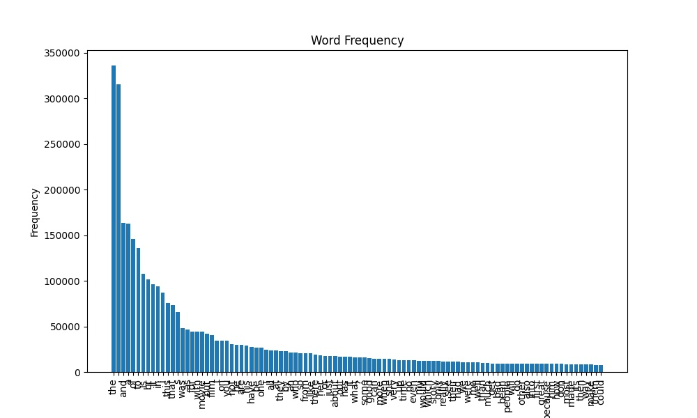
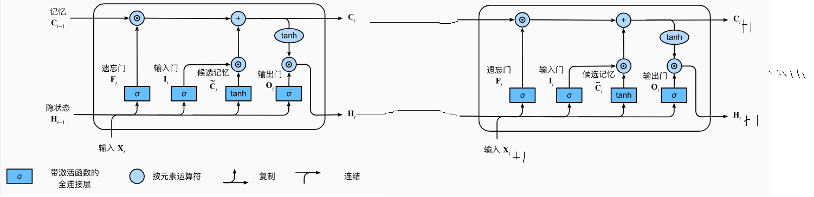
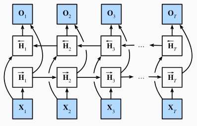
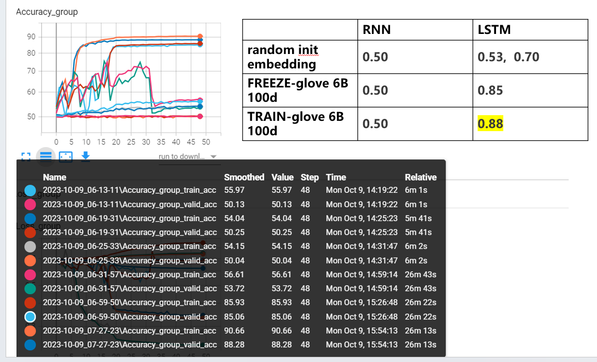

9.2 文本分类-RNN-LSTM
前言
本节介绍RNN和LSTM，并采用它们在电影评论数据集上实现文本分类，本小节会涉及以下几个知识点。
- 词表构建：包括数据清洗，词频统计，词频截断，词表构建
- 预训练词向量应用：下载并加载Glove的预训练embedding进行训练，主要是如何把词向量放到nn.embedding层中的权重。
- RNN及LSTM构建：涉及nn.RNN和nn.LSTM的使用
任务介绍
本节采用的数据集是斯坦福大学的大型电影评论数据集（large movie review dataset） https://ai.stanford.edu/~amaas/data/sentiment/
包含25000个训练样本，25000个测试样本，下载解压后得到aclImdb文件夹，aclImdb下有train和test，neg和pos下分别有txt文件，txt中为电影评论文本。
来看看一条具体的样本，train/pos/3_10.txt：
"All the world's a stage and its people actors in it"--or something like that. Who the hell said that theatre stopped at the orchestra pit--or even at the theatre door? Why is not the audience participants in the theatrical experience, including the story itself?<br /><br />This film was a grand experiment that said: "Hey! the story is you and it needs more than your attention, it needs your active participation". "Sometimes we bring the story to you, sometimes you have to go to the story."<br /><br />Alas no one listened, but that does not mean it should not have been said.
本节任务就是对这样的一条文本进行处理，输出积极/消极的二分类概率向量。
数据模块
文本任务与图像任务不同，输入不再是像素这样的数值，而是字符串，因此需要将字符串转为矩阵运算可接受的向量形式。
为此需要在数据处理模块完成以下步骤：
- 分词：将一长串文本切分为一个个独立语义的词，英文可用空格来切分。
- 词嵌入：词嵌入通常分两步。首先将词字符串转为索引序号，然后索引序号根据词嵌入矩阵（embedding层）取对应的向量。其中词与索引之间的映射关系需要提前构建，这就是词表构建的过程。
因此，代码开发整体流程：
- 编写分词功能函数
- 构建词表：对训练数据进行分词，统计词频，并构建词表。例如{'UNK': 0, 'PAD': 1, 'the': 2, '.': 3, 'and': 4, 'a': 5, 'of': 6, 'to': 7, ...}
- 编写PyTorch的Dataset，实现分词、词转序号、长度填充/截断
序号转词向量的过程由模型的nn.Embedding层实现，因此数据模块只需将词变为索引序号即可，接下来一一解析各环节核心功能代码实现。
词表构建
参考配套代码a_gen_vocabulary.py，首先编写分词功能函数，分词前做一些简单的数据清洗，例如在标点符号前加入空格、去除掉不是大小写字母及 .!? 符号的数据。
def text_split(content: str) -> List[str]:
content = re.sub(r"([.!?])", r" \1", content) # 在 .!? 之前添加一个空格
content = re.sub(r"[^a-zA-Z.!?]+", r" ", content) # 去除掉不是大小写字母及 .!? 符号的数据
token = [i.strip().lower() for i in content.split()] # 全部转换为小写，然后去除两边空格，将字符串转换成list,
return token
接着，写一个词表统计类实现词频统计，和词表字典的创建，代码注释非常详细，这里不赘述。
运行代码，即可完成词频统计，词表的构建，并保存到本地npy文件，在训练及推理过程中使用。
class Vocabulary:
UNK_TAG = "UNK" # 遇到未知字符，用UNK表示
PAD_TAG = "PAD" # 用PAD补全句子长度
UNK = 0 # UNK字符对应的数字
PAD = 1 # PAD字符对应的数字
def __init__(self):
self.inverse_vocab = None
self.vocabulary = {self.UNK_TAG: self.UNK, self.PAD_TAG: self.PAD}
self.count = {} # 统计词频、
def fit(self, sentence_: List[str]):
def build_vocab(self, min=0, max=None, max_vocab_size=None) -> Tuple[dict, dict]
在词表构建过程中有一个截断数量的超参数需要设置，这里设置为20000，即最多有20000个词的表示，不在字典中的词被归为UNK这个词。
在这个数据集中，原始词表长度为74952，即通过split切分后，有7万多个不一样的字符串，通常可以通过降序排列，取前面一部分即可。
代码会输出词频统计图，也可以观察出词频下降的速度以及高频词是哪些。

Dataset编写
参考配套代码aclImdb_dataset.py，getitem中主要做两件事，首先获取label，然后获取文本预处理后的列表，列表中元素是词所对应的索引序号。
def __getitem__(self, item):
# 读取文件路径
file_path = self.total_file_path[item]
# 获取 label
label = 0 if os.path.basename(os.path.dirname(file_path)) == "neg" else 1 # neg -> 0; pos -> 1
# tokenize & encode to index
token_list = text_split(open(file_path, encoding='utf-8').read()) # 切分
token_idx_list = self.word2index.encode(token_list, self.vocab, self.max_len)
return np.array(token_idx_list), label
在self.word2index.encode中需要注意设置文本最大长度self.max_len，这是由于需要将所有文本处理到相同长度，长度不足的用词填充，长度超出则截断。
模型模块——RNN
模型的构建相对简单，理论知识在这里不介绍，需要了解和温习的推荐看看《动手学》。这里借助动手学的RNN图片讲解代码的实现。

在构建的模型RNNTextClassifier中，需要三个子module，分别是:
- nn.Embedding：将词序号变为词向量，用于后续矩阵运算
- nn.RNN：循环神经网络的实现
- nn.Linear：最终分类输出层的实现
在forward时，流程如下：
- 获取词向量
- 构建初始化隐藏层，默认为全0
- rnn推理获得输出层和隐藏层
- fc层输出分类概率：fc层的输入是rnn最后一个隐藏层
def forward(self, x):
x_embed = self.embedding(x) # [batch_size, max_len] -> [batch_size, text_len, embed_len]
bs_, text_len, embed_len = x_embed.shape
hidden_init = self.init_hidden(bs_)
outputs, hidden = self.rnn(x_embed, hidden_init)
# Extract the last hidden state
last_hidden = hidden[-1].squeeze(0) # [num_layers, bs, hidden_size] -> [bs, hidden_size]
fc_output = self.fc(last_hidden)
return fc_output
更多关于nn.RNN的参数设置，可以参考官方文档：torch.nn.RNN(self, input_size, hidden_size, num_layers=1, nonlinearity='tanh', bias=True, batch_first=False, dropout=0.0, bidirectional=False, device=None, dtype=None)
模型模块——LSTM
RNN是神经网络中处理时序任务最为经典的设计，但是其也存在一些缺点，例如梯度消失和梯度爆炸，以及长期依赖问题。
当序列很长时，RNN模型很难捕捉到远距离的依赖关系，导致模型预测不准确。
为此，带门控机制的RNN涌现，包括GRU（Gated Recurrent Unit，门控循环单元）和LSTM（Long Short-Term Memory，长短期记忆网络），其中LSTM应用最广，这里直接跳过GRU。
LSTM模型引入了三个门（input gate、forget gate和output gate），用于控制输入、输出和遗忘的流动，允许模型有选择性地忘记或记住一些信息。
- input gate用于控制输入的流动
- forget gate用于控制遗忘的流动
- output gate用于控制输出的流动
相较于RNN，除了输出隐藏层向量h，还输出记忆层向量c，不过对于下游使用，不需要关心向量c的存在。
同样地，借助《动手学》中的LSTM示意图来理解代码。

在这里，借鉴《动手学》的代码，采用的LSTM为双向LSTM，这里简单介绍双向循环神经网络的概念。
双向循环神经网络（Bidirectional Recurrent Neural Network，Bi-RNN）同时考虑前向和后向的上下文信息，前向层和后向层的输出在每个时间步骤上都被连接起来，形成了一个综合的输出，这样可以更好地捕捉序列中的上下文信息。

在pytorch代码中，只需要将bidirectional设置为True即可，nn.LSTM(embed_size, num_hiddens, num_layers=num_layers, bidirectional=True)。
当采用双向时，需要注意output矩阵的shape为 [ sequence length ， batch size ，2×hidden size]
更多关于nn.LSTM的参数设置，可以参考官方文档：torch.nn.LSTM(self, input_size, hidden_size, num_layers=1, bias=True, batch_first=False, dropout=0.0, bidirectional=False, proj_size=0, device=None, dtype=None)
详细参考：https://pytorch.org/docs/stable/generated/torch.nn.LSTM.html#torch.nn.LSTM
embedding预训练加载
模型构建好之后，词向量的embedding层是随机初始化的，要从头训练具备一定逻辑关系的词向量表示是费时费力的，通常可以采用在大规模预料上训练好的词向量矩阵。
这里可以参考斯坦福大学的GloVe（Global Vectors for Word Representation）预训练词向量。
GloVe是一种无监督学习算法，用于获取单词的向量表示，GloVe预训练词向量可以有效地捕捉单词之间的语义关系，被广泛应用于自然语言处理领域的各种任务，例如文本分类、命名实体识别和机器翻译等。
Glove有四大类，根据数据量不同进行区分，相同数据下又根据向量长度分
- Wikipedia 2014 + Gigaword 5 (6B tokens, 400K vocab, uncased, 50d, 100d, 200d, & 300d vectors, 822 MB download): glove.6B.zip
- Common Crawl (42B tokens, 1.9M vocab, uncased, 300d vectors, 1.75 GB download): glove.42B.300d.zip
- Common Crawl (840B tokens, 2.2M vocab, cased, 300d vectors, 2.03 GB download): glove.840B.300d.zip
- Twitter (2B tweets, 27B tokens, 1.2M vocab, uncased, 25d, 50d, 100d, & 200d vectors, 1.42 GB download): glove.twitter.27B.zip
在这里，采用Wikipedia 2014 + Gigaword 5 中的100d，即词向量长度为100，向量的token数量有6B。
下载好的GloVe词向量矩阵是一个txt文件，一行是一个词和词向量，中间用空格隔开，因此加载该预训练词向量矩阵可以这样。
def load_glove_vectors(glove_file_path, word2idx):
"""
加载预训练词向量权重
:param glove_file_path:
:param word2idx:
:return:
"""
with open(glove_file_path, 'r', encoding='utf-8') as f:
vectors = {}
for line in f:
split = line.split()
word = split[0]
vector = torch.FloatTensor([float(num) for num in split[1:]])
vectors[word] = vector
return vectors
原始GloVe预训练词向量有40万个词，在这里只关心词表中有的词，因此可以在加载字典时加一行过滤，即在词表中的词，才去获取它的词向量。
if word in word2idx:
vector = torch.FloatTensor([float(num) for num in split[1:]])
vectors[word] = vector
在本案例中，词表大小是2万，根据匹配，只有19720个词在GloVe中找到了词向量，其余的词向量就需要随机初始化。
获取GloVe预训练词向量字典后，需要把词向量放到embedding层中的矩阵，对弈embedding层来说，一行是一个词的词向量，因此通过词表的序号找到对应的行，然后把预训练词向量放进去即可，代码如下：
word2idx = np.load(vocab_path, allow_pickle=True).item() # 词表顺序仍旧根据训练集统计得到的词表顺序
for word, idx in word2idx.items():
if word in glove_vectors:
model.embedding.weight.data[idx] = glove_vectors[word]
if args.is_freeze:
model.embedding.weight.requires_grad = False # embedding层是否还需要更新
训练及实验记录
准备好了数据和模型，接下来按照常规模型训练即可。
这里将会做一些对比实验，包括模型对比：
- RNN vs LSTM
- 有预训练词向量 vs 无预训练词向量
- 冻结预训练词向量 vs 放开预训练词向量
具体指令如下，推荐放到bash文件中，一次性跑
python train_main.py --data-path /workspace/data/aclImdb --batch-size 64 --epochs 50 --lr 0.01 --model-mode rnn --glove-file-path ""
python train_main.py --data-path /workspace/data/aclImdb --batch-size 64 --epochs 50 --lr 0.01 --model-mode rnn --glove-file-path /workspace/data/glove_6B/glove.6B.100d.txt --is-freeze
python train_main.py --data-path /workspace/data/aclImdb --batch-size 64 --epochs 50 --lr 0.01 --model-mode rnn --glove-file-path /workspace/data/glove_6B/glove.6B.100d.txt
python train_main.py --data-path /workspace/data/aclImdb --batch-size 64 --epochs 50 --lr 0.01 --model-mode lstm --glove-file-path ""
python train_main.py --data-path /workspace/data/aclImdb --batch-size 64 --epochs 50 --lr 0.01 --model-mode lstm --glove-file-path /workspace/data/glove_6B/glove.6B.100d.txt --is-freeze
python train_main.py --data-path /workspace/data/aclImdb --batch-size 64 --epochs 50 --lr 0.01 --model-mode lstm --glove-file-path /workspace/data/glove_6B/glove.6B.100d.txt
实验结果如下所示：
- RNN整体不work，经过分析发现设置的文本token长度太长，导致RNN梯度消失，以至于无法训练。调整text_max_len为50后，train acc=0.8+, val=0.62，整体效果较差。
- 有了预训练词向量要比没有预训练词向量高出10多个点
- 放开词向量训练，效果会好一些，但是不明显
| RNN（text_len=500） | LSTM | RNN（text_len=50） | |
|---|---|---|---|
| random init embedding | 0.50 | 0.53, 0.70 | 0.58 |
| FREEZE-glove 6B 100d | 0.50 | 0.85 | 0.67 |
| TRAIN-glove 6B 100d | 0.50 | 0.88 | 0.67 |

补充实验：将RNN模型的文本最长token数量设置为50，其余保持不变，得到的三种embedding方式的结果如下：
结论：
- LSTM较RNN在长文本处理上效果更好
- 预训练词向量在小样本数据集上很关键，有10多个点的提升
- 放开与冻结embedding层训练，效果差不多
小结
本小节通过电影影评数据集实现文本分类任务，通过该任务可以了解：
- 文本预处理机制：包括清洗、分词、词频统计、词表构建、词表截断、UNK与PAD特殊词设定等
- 预训练词向量使用：包括GloVe的下载及加载、nn.embedding层的设置
- RNN系列网络模型使用：大致了解循环神经网络的输入/输出是如何构建，如何配合fc层实现文本分类
- RNN可接收的文本长度有限：文本过长，导致梯度消失，文本过短，导致无法捕获更多文本信息，因此推荐采用LSTM等门控机制的模型
这一小节是经典的seq2cls的任务，下一小节，将对seq2seq进行介绍。